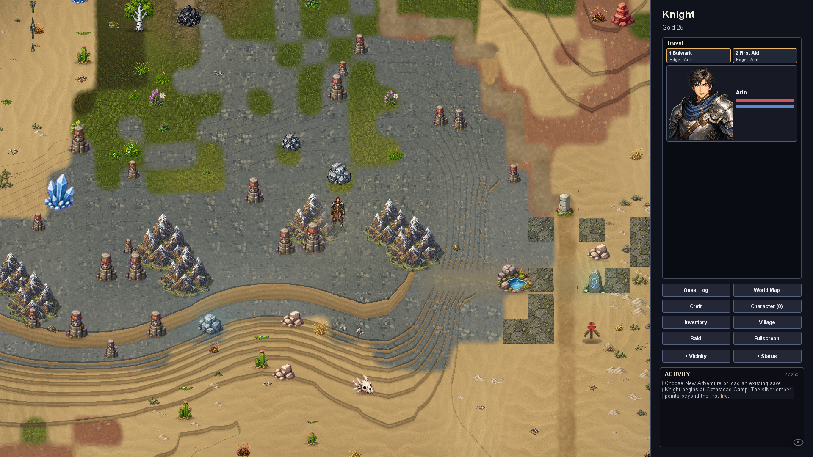

Elevation across Alderfall
Broad mountain terraces connect through small steps and planned hiking ramps. Steep summit cores remain blocked. Rolling meadows, rooted woodland banks, sandstone terraces and low wetlands follow the world's geography. Roads, crossings and building foundations keep their existing access.

These are actual game renders. The material sheet shows the procedural textures used for banks. Restart the game to see elevation in generated outdoor maps.
Reproduce these captures ? Behavior and validation ? Earlier isolated study
Interior floors and authored editor maps retain their existing geometry. The live renderer keeps actor/camera ground anchors stable and draws elevation as connected contour banks.